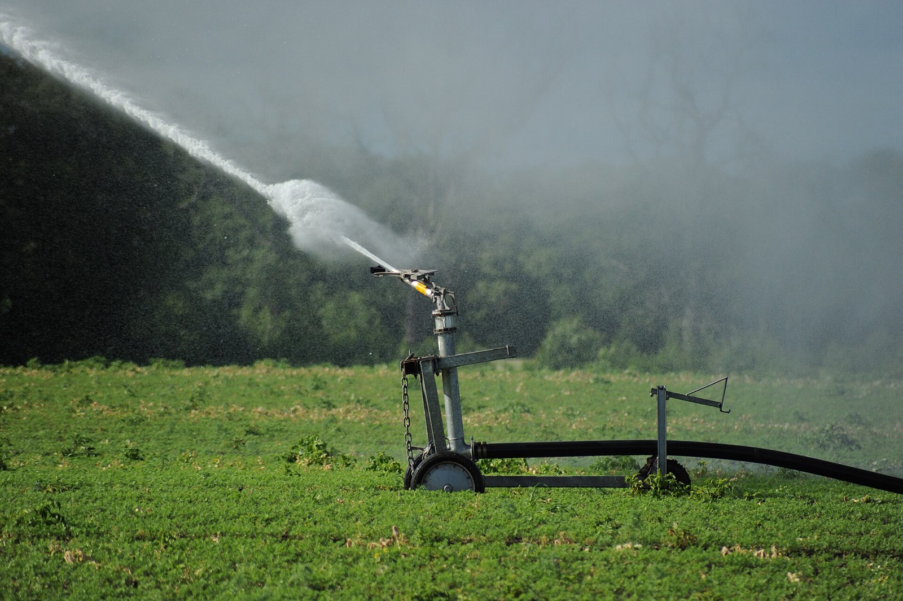

An automated defence line, 30 to 100 metres out: a continuous wet band that forms itself the moment a fire front approaches — on its own water, its own solar power, with a fluorine-free agent, and with nobody present.
The engineering is done. The costs are modelled. What we are looking for is the partner who builds the first one.
Every wildfire protection product on the market answers those two questions — and almost all of them answer both the same way: at the house, and once the fire is already there. Plot the field on those two axes and an empty square appears.
| When it acts | Who | The limit |
|---|---|---|
| Months ahead | Matrix Wildfire · statutory firebreaks | The treatment degrades, and nothing can be done in the moment itself |
| Minutes ahead | Frontline · waveGUARD · per-house systems | Only the surface of the house — by then the fire is on the plot |
| Afterwards | Team Wildfire · insurer response fleets · aircraft | Someone has to arrive, with people and machines, at the worst possible moment |
| In the moment | The Standoff Line | Nobody covers this today |
We did not invent this idea, and we say so first. In Spain, Medi XXI has built cannon-based perimeter defences around developments since 2006 and holds a granted patent. In France, STME FIRE runs a research programme on exactly this. In Portugal, university researchers ringed a village with twelve sprinkler columns in 2020. In the USA, two funded companies build barriers at industrial scale.
What is not being done is the part we built: a standoff line small enough, cheap enough and automatic enough to be bought by one house or one street — a continuous band from small heads instead of a few big cannons, dual-triggered, energy-independent, and with an agent that already meets the 2030 European ban on fluorinated foams.
A brass impact head with a 15 m radius every 20 m, so the circles overlap into a 22 m unbroken wet band. At 10 m radius the band would have holes — and a fire goes through the holes.
A satellite fire alert arms the line at roughly 10 km. A local UV/IR flame detector fires it at roughly 300 m. Fast and precise, without choosing between them.
Own tank, own pump, solar with battery and an auto-start generator. At least four hours of operation. Mains water pressure and grid power are the first things a wildfire takes away.
A Class A foam measured below 1 mg/kg fluorine, GreenScreen Silver, and already on the US Forest Service qualified products list. It meets the 2030 EU PFAS ban today.
The flame detectors say which arc the front is coming from, so only that sector runs, plus two poles of margin. The water lasts two to three times longer.
Start time, pressure, water used, temperature, wind, runtime. Insurers price what they can model — so the line produces the evidence from its first day.
The line stands dry. A weekly self-test cycles the valves, the solar array keeps the battery full, the tank stays full. Nothing runs, nothing is wasted, and the same pipework can irrigate.
A satellite fire alert wakes the system. The pump pressurises, the sectors report ready, and the owner gets a notification — wherever they are.
Solar-powered UV/IR flame detector nodes along the line identify not only that a front is coming, but from which arc.
Only the threatened sector starts, plus two poles of margin. The overlapping heads build a continuous 22 m band; foam is dosed at 0.1–1%. In strong wind the controller switches to a coarser droplet so less of it drifts away.
At least four hours from its own tank. The active sector follows the front as it passes, and the band keeps cooling the ground after the flame has gone — which is what stops a re-ignition.
An event report: start time, runtime, pressures, water and agent used, temperature and wind. This is the file an insurer can model — and the reason the evidence exists from the first fire onwards.
| Above ground | Below ground | The plant room |
|---|---|---|
| 3–5 m galvanised steel pole on a concrete footing Brass impact head, 15 m radius, 25–30 L/min at ~4 bar Solar UV/IR flame-detector nodes Inner ring: roof and eave sprinklers — the ember layer |
HDPE main, buried 0.45–0.5 m Metal pipe wherever it surfaces Sectioning valves per arc A collection channel that returns unevaporated water to the tank |
Tank, sized to the vegetation type Electric pump plus diesel auto-start backup Solar array, LiFePO4 battery in a fire-rated cabinet Foam proportioner 0.1–1% and concentrate tank Controller: 4G, satellite alert receiver, weather and level sensors |
Standard fire-brigade couplings on the tank, so an engine can draw from it — required by name in the Valencian building code, and the fastest way to make the local fire service an ally rather than an obstacle.
| Per pole, per fire event | Per house, full protective ring | Community line, 1 km |
|---|---|---|
| ~2.9 m³ water 11–19 L of concentrate ~0.9 kWh 440–600 m² protected |
€31–82k grassland (13 poles) €37–98k brush (19 poles) €62–163k forest (44 poles) 7,700 / 15,200 / 25,200 m² protected |
$121–251k = €1,500–7,400 per home The version a street can actually afford |
Figures from our own hydraulic, energy and cost model, at European price levels. Distances: 30 m for grassland, 50 m for brush, a double row at 50 + 70 m for forest; roughly double on a slope the fire climbs.
And what it is not. Up to 90% of homes lost in a wildfire are ignited by wind-driven embers, not by the flame front — and embers fly over any band. The line stops the front and takes away the radiant heat; ember-resistant vents, screens and a wetted roof stop the rest. We supply both, and we will never claim that one replaces the other.
These are not our installations. They are public records of what fire agencies do when a front is coming: unroll hose, hang sprinklers, drop portable tanks, and stay. It works — and it needs people, at the worst possible moment, in the last hundred metres. That is the part we automate and move out to 30–100 m.



None of these pictures is ours. We have no installed reference, and nothing on this page is a photograph of our own work. These images are used because they show the same physics — and the same limit. The source and licence of each is printed underneath it.
We can design it, size it, write its control software and manage its construction. What we cannot do is finance the first installation. That is the whole proposition, stated plainly.
Fire-protection and irrigation contractors · manufacturers looking for an application · utilities and railways · municipalities and fire districts · insurers and MGAs who already pay for mitigation · resorts, estates and industrial sites in fire-prone regions.
A 100–200 metre demonstration line, instrumented, filmed, measured. We already have a candidate site: the perimeter of an industrial plant of roughly five to six hectares in Vietnam — our own ground, our own crew, our own procurement. That is the cheapest credible proof in existence, and it is what turns a drawing into evidence.
And the honest list of what we do not have. No installed reference. No stamped fire-engineering design. No licence in any jurisdiction. What we do have is a concept worked through to cost level, the competitor and regulatory picture in writing, the software that makes it a defence line rather than a sprinkler, and a project director who has delivered before. We would rather open with that list than be found out holding it back.
An economist by training who has taken projects from the first meeting to handover. General director (Tổng giám đốc) of an export poultry plant in Thanh Hóa province, Vietnam — built with Hungarian technology and Hungarian capital on a site of roughly five to six hectares, and inaugurated on 24 October 2019 in the presence of the Hungarian and Vietnamese agriculture ministers and the Hungarian ambassador. Decades of international project management across two countries and two languages, and for many years a regular interpreter for high-level delegations of both governments, including the Vietnamese National Assembly delegation to Hungary in 2022.
He is not an engineer and does not present himself as one. What he brings is the thing most often missing on a build: that the project actually starts, that the parties pull in one direction, that the money and the schedule hold, and that somebody answers for the handover.
Software and systems engineer: the sensing, the trigger logic, the sector control, the telemetry and the event log — and the application that lets an evacuating owner see that the line is alive. A former flight instructor, which is where the habit comes from of designing for the moment when something fails rather than the moment when everything works.
In this system the software is not an accessory. The difference between a sprinkler and a defence line is what decides when it runs, how much water it spends, and what it can prove afterwards.
If you build fire protection, irrigation or infrastructure, and you have a perimeter that needs defending — that is the conversation we want. We answer in English, Hungarian and Vietnamese.
The full concept study, the cost model and the competitor analysis are available on request, in Hungarian or English.